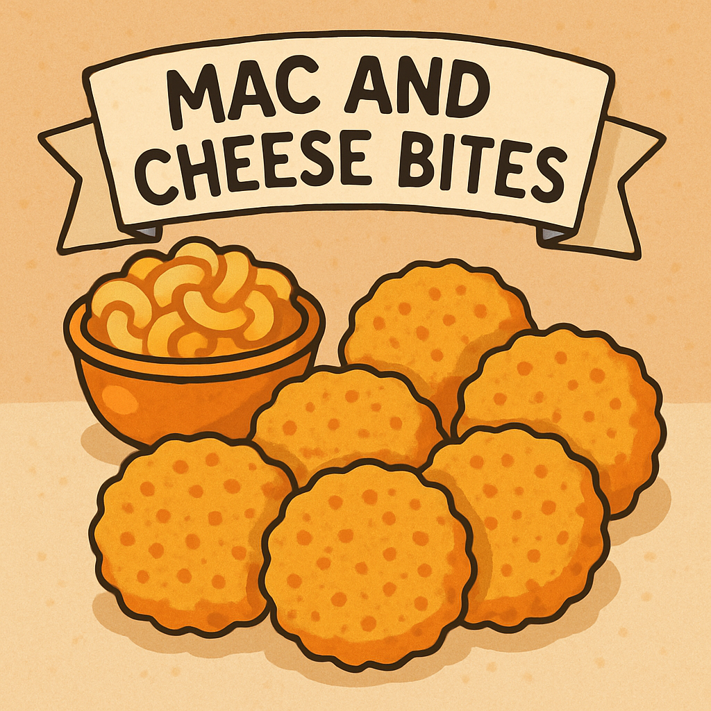

Home
Mac and Cheese bites

Description
Mac and cheese bites are a delicious and cheesy snack made from macaroni pasta mixed with cheese, then breaded and fried or baked until golden brown.
Ingredients
- 460g cooked macaroni pasta
- 220g shredded cheddar cheese
- 100g breadcrumbs
- 65g grated Parmesan cheese
- 1 egg, beaten
- Salt and pepper to taste
Steps
- Preheat the oven to 200°C.
- In a bowl, mix together the cooked macaroni, cheddar cheese, breadcrumbs, Parmesan cheese, beaten egg, salt, and pepper.
- Scoop tablespoon-sized portions of the mixture and shape them into balls.
- Place the balls on a baking tray lined with parchment paper.
- Bake for 15-20 minutes or until golden brown and crispy.
- Let cool slightly before serving.